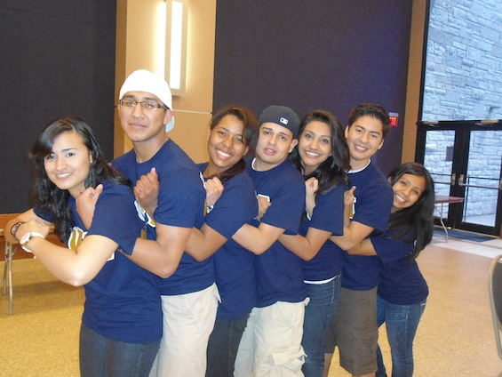

HOW TO JOIN?
 Membership is open to all University of Toledo students regardless of race, religion, national origin, sex, disability, or any other group.
What our Nu chapter of Alpha Psi Lambda can do for you:
Alpha Psi Lambda is more than just a student organization. Our fraternity embodies true family support, brotherhood and sisterhood. These traits are very important and serve as a basis for making the transition to life at a large university easier.
We are a familia that helps better our members personally, academically, and professionally. Our members grow through our many opportunities for community service, academic support, campus involvement, and everlasting friendships.
How to be a part of Alpha Psi Lambda:
Alpha Psi Lambda is a fraternity that is dedicated to enhancing your time here at Ohio State. Throughout the year, we hold interest meetings so that you have a chance to learn more about our fraternity.
The requirements set forth by Alpha Psi Lambda’s National office and Ohio State Greek Life are as follows:
- Not be a member of any other social fraternity or sorority.
- Be enrolled part-time at University of Toledo
- Be in good academic standing and hold a cumulative GPA of 2.5 on a 4.0 scale (first quarter freshmen are not eligible for membership).
- Attend an interest meeting held by Alpha Psi Lambda, as well have an individual interview.
Who to contact?
Alpha Psi Lambda may seem like a big step for you, but we are here to answer any and all of your questions. In addition to browsing our website and attending an interest meeting, Click here to Contact Us
Please follow us in our Facebook Page for more information regarding our current events.
Are you ready? Come join us!